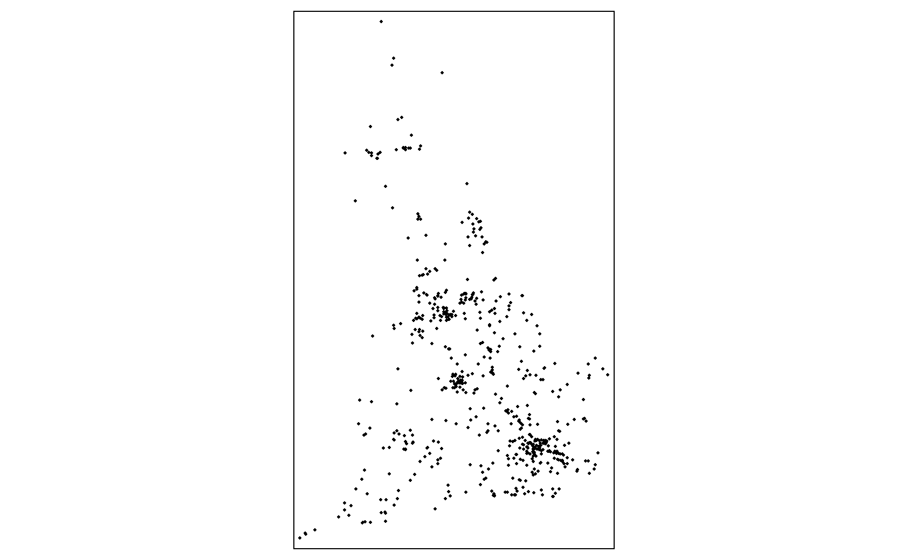
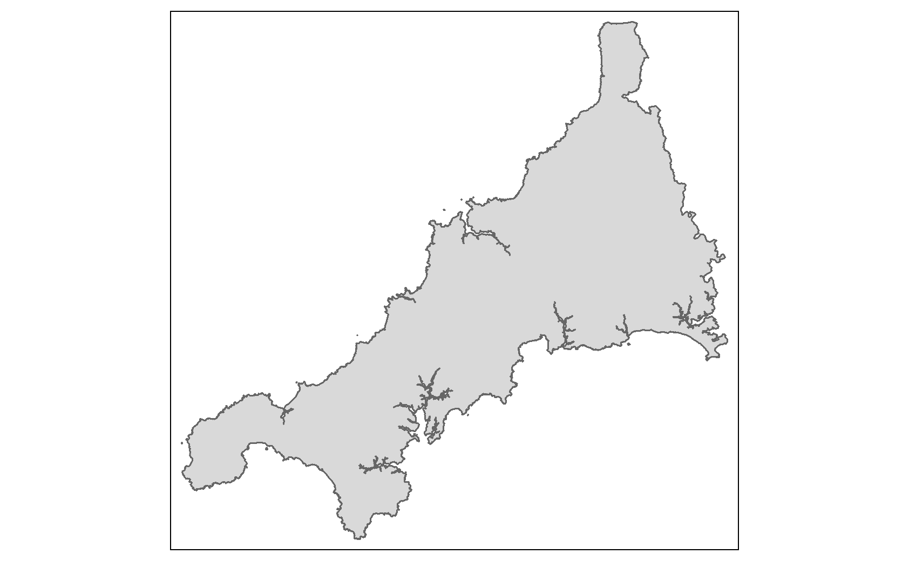
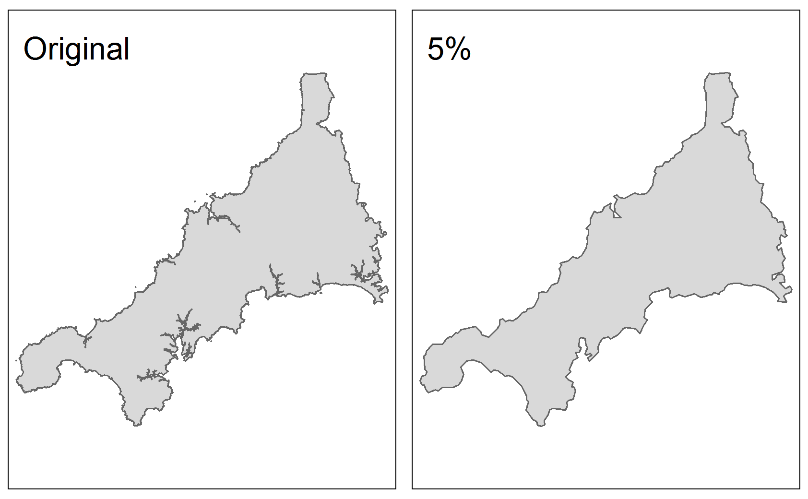
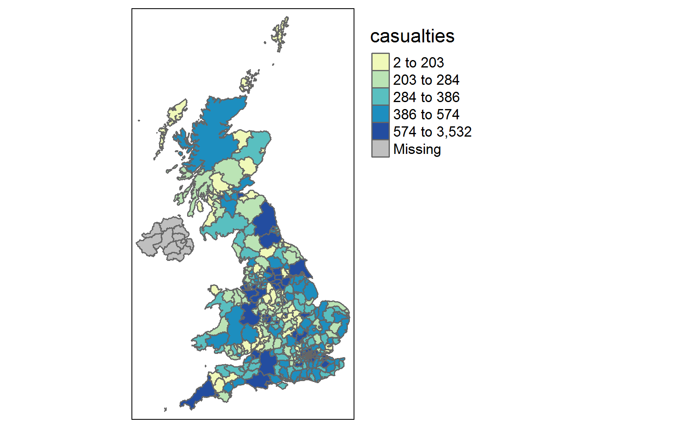
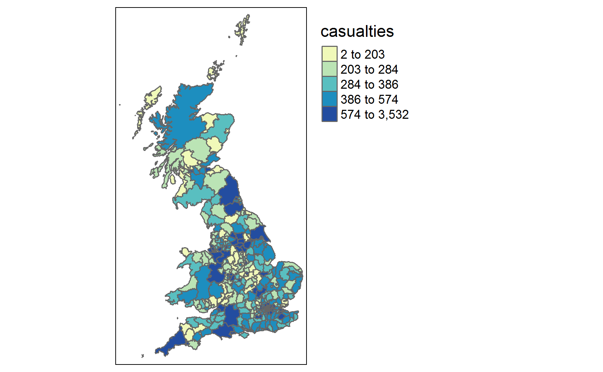

Chapter 12 Spatial Analysis in R
12.1 What is Spatial Data?
For most work in R we work with flat data, i.e. data that is only 1 or 2 dimensions. A data frame, for example, has two dimensions (rows representing observations and columns representing variables), and no other information outside of that two dimensional array. Spatial data however needs some extra information for it to accurately represent actual locations on the Earth: the coordinates of the object; and a system of reference for how the coordinates relate to a physical location on Earth.
12.2 Packages
To hold spatial data, we need to leverage packages which exist outside of Base R. We will be using the {sf} package for these example, but note that it is common to see spatial data held in the {sp}, {geojson}, and {raster} packages as well, all of which have their own advantages and disadvantages (it is not uncommon to have to switch from one to another to leverage these advantages - more on that later).
The advantage of using the {sf} package is that data is kept in as similar a format to a flat data frame as possible. This makes it easier to work with our data for two reasons. First, it lets us use {dplyr} data manipulations or join our spatial data with non-spatial data (some spatial data formats don’t let you do this). Second, it’s just simplier to wrap your head around.
12.3 Reading in Spatial Data
Let’s have a look at some data. We can read in our data as a spatial object using the st_read funciton from the {sf} package (if it is saved in an .shp format and has necessary metadata). We’ll be working with some shapefiles which represent local authorities which are sourced from the ONS.
Reading in Spatial Data
LAs <- sf::st_read("data/LAs")
#> Reading layer `LAs' from data source
#> `/home/runner/work/R-cookbook/R-cookbook/data/LAs' using driver `ESRI Shapefile'
#> Simple feature collection with 382 features and 2 fields
#> Geometry type: MULTIPOLYGON
#> Dimension: XY
#> Bounding box: xmin: 364.2663 ymin: 9909.1 xmax: 655599.6 ymax: 1218502
#> Projected CRS: Transverse_MercatorLooking at the message we get when we load in our data, we can find out some basic information about our sf dataframe:
- It tells us that it is a “Simple feature collection with 391 features and 10 fields”. In other words, this is telling us that it is an sf dataframe of 391 observations (features) and 10 variables (fields).
- The geometry type is “MULTIPOLYGON”. To break this down, the “POLYGON” is telling us we’re dealing with distinct shapes for each observation (as opposed to lines or dots), and the “MULTI” is telling us that one observation can be represented by multiple polygons. An example of this would be the Shetland Islands, a single local authority made up of many small polygons.
- The “bbox”” gives us the coordinates of a bounding box which will contain all the features of the sf data frame.
- The “epsg” and “proj4string” gives us the coordinate reference system. The most common code you will see is 4326 which refers to the “World Geodetic System 1984”. This is the coordinate reference system you are probably most familiar with (without realising it), as it is used in most GPS and mapping software. Points in the WGS system are referred to by their “latitude” and “longitude”. In this case, the epsg code is “NA”, in which case we will have to refer to the documentation to discern the correct epsg code to apply to the data.
We can also ask R to give us all of this info with the st_geometry function.
Inspect spatial data
sf::st_geometry(LAs)
#> Geometry set for 382 features
#> Geometry type: MULTIPOLYGON
#> Dimension: XY
#> Bounding box: xmin: 364.2663 ymin: 9909.1 xmax: 655599.6 ymax: 1218502
#> Projected CRS: Transverse_Mercator
#> First 5 geometries:
#> MULTIPOLYGON (((448874 536622.6, 453089.1 53411...
#> MULTIPOLYGON (((451744.3 520566.4, 451788.8 520...
#> MULTIPOLYGON (((478094.9 518835.6, 475360.6 516...
#> MULTIPOLYGON (((448472.8 525830.1, 448796 52591...
#> MULTIPOLYGON (((515719.3 428570.8, 515724.4 428...12.4 CRS Projections
There’s a lot that can be said about the utlity of different Coordinate Reference Systems, but long-story-short they all have unique advantages and disadvantages as they distort shape, distance, or size in different ways. In our day-to-day work, you’re most likely to encounter two coordinate reference systems: the World Geodatic System (WGS84 - EPSG code: 4326), or the Ordance Survey Great Britain 1936 system (OSGB36 - EPSG code: 27700).
The WGS84 system is best suited to global data - for example plotting international ports or a world map of countries. It is a geodatic system, which means the points it defines refer to a point on a 3d elipsoid which represents the earth.
The OSGB1936 system is best suited to mapping the UK or areas within it. It is a projected system, which means it projects the 3d curve of the earth into a 2d object. An advantage of this is that eastings (the x-axis of this projection) remains consistent at all northings (the y-axis). For example, a 1000 unit change in eastings is a 1km change anywhere, whereas a 1 unit change in longitude is a different distance depending on the latitude, as the earth gets narrower the further away you get from the equator.
Complexities aside, practically what this means is that you will always want all of you’re spatial data to be in the same CRS, otherwise spatial joins and mapping functions will start throwing up errors. We can change the crs projection very easily with the {sf} function st_transform.
Changing Coordinate Reference System
LAs <- sf::st_transform(LAs, crs = 27700)
sf::st_crs(LAs)
#> Coordinate Reference System:
#> User input: EPSG:27700
#> wkt:
#> PROJCRS["OSGB36 / British National Grid",
#> BASEGEOGCRS["OSGB36",
#> DATUM["Ordnance Survey of Great Britain 1936",
#> ELLIPSOID["Airy 1830",6377563.396,299.3249646,
#> LENGTHUNIT["metre",1]]],
#> PRIMEM["Greenwich",0,
#> ANGLEUNIT["degree",0.0174532925199433]],
#> ID["EPSG",4277]],
#> CONVERSION["British National Grid",
#> METHOD["Transverse Mercator",
#> ID["EPSG",9807]],
#> PARAMETER["Latitude of natural origin",49,
#> ANGLEUNIT["degree",0.0174532925199433],
#> ID["EPSG",8801]],
#> PARAMETER["Longitude of natural origin",-2,
#> ANGLEUNIT["degree",0.0174532925199433],
#> ID["EPSG",8802]],
#> PARAMETER["Scale factor at natural origin",0.9996012717,
#> SCALEUNIT["unity",1],
#> ID["EPSG",8805]],
#> PARAMETER["False easting",400000,
#> LENGTHUNIT["metre",1],
#> ID["EPSG",8806]],
#> PARAMETER["False northing",-100000,
#> LENGTHUNIT["metre",1],
#> ID["EPSG",8807]]],
#> CS[Cartesian,2],
#> AXIS["(E)",east,
#> ORDER[1],
#> LENGTHUNIT["metre",1]],
#> AXIS["(N)",north,
#> ORDER[2],
#> LENGTHUNIT["metre",1]],
#> USAGE[
#> SCOPE["Engineering survey, topographic mapping."],
#> AREA["United Kingdom (UK) - offshore to boundary of UKCS within 49°45'N to 61°N and 9°W to 2°E; onshore Great Britain (England, Wales and Scotland). Isle of Man onshore."],
#> BBOX[49.75,-9,61.01,2.01]],
#> ID["EPSG",27700]]This changes the CRS projection from the WGS84 system to the OSGB1936 system, converting all of the coordinates to the new system. We can use the crs argument to change to any number of different projections. Note that this only works if the spatial object has data on the coordinate reference system already. If your data is missing all of this information, you will have to set the crs manually (if you know what the CRS projection should be):
Setting Coordinate Reference System
sf::st_crs(sf_object) <- 2770012.5 Manipulating Spatial Data
As mentiond above, one of the key advantages of working with spatial data in {sf} format is that we can use tidyverse functions to manipulate our data. Let’s show this in action by creating a new variable.
The variable “lad19cd” has a unique code for each local authority. All codes begin with a letter, followed by a numeric series. The letter refers to the country (“E” for England, “W” for Wales, “S” for Scotland, and “N” for Northern Ireland). We can use this to create a new variable called “country” for each feature.
Manipulating {sf} data with dplyr
LAs <- LAs %>% dplyr::mutate(country = dplyr::case_when(stringr::str_detect(lad19cd, "W") ~ "Wales",
stringr::str_detect(lad19cd, "S") ~ "Scotland",
stringr::str_detect(lad19cd, "N") ~ "Northern Ireland",
stringr::str_detect(lad19cd, "E") ~ "England"))
LAs %>% as.data.frame() %>% dplyr::group_by(country) %>% dplyr::tally()| country | n |
|---|---|
| England | 317 |
| Northern Ireland | 11 |
| Scotland | 32 |
| Wales | 22 |
As we can see, we’ve manipulated our data in exactly the same way as we would have with a flat dataframe.We can also join spatial and non-spatial data together in the same way we normally would with dataframes. Let’s take some population data and join it to our Local Authorities.
Joining Spatial and non-spatial data
summary(LAs_pop)
#> lad19cd population
#> Length:437 Min. : 2242
#> Class :character 1st Qu.: 104503
#> Mode :character Median : 147997
#> Mean : 960204
#> 3rd Qu.: 276374
#> Max. :66435550
#> NA's :7This dataframe of local authority populations has 2 variables, local authority code (lad19cd) and population. We can use a {dplyr} left_join to join this to our {sf} dataframe as we would with a flat dataframe.
LAs <- dplyr::left_join(LAs, LAs_pop, by = "lad19cd")
LAs$population <- as.numeric(LAs$population)12.6 Spatial Analysis - Joins
A common task we might want to conduct is to manipulated a spatial object based on a relationship with another spatial object. To do this, we will use the st_join function from the {sf} package. The st_join allows us to join data on a number of different relationships, the simplest of which examines whether an object intersects another object - i.e. if there is any point where the geometries of both objects are identical. This could be where two lines cross, where two different spatial points objects have the same gemoetry, or it could be a point falling within the bounds of a polygon.
Let’s look at some data representing the coordinates of road traffic accidents in Great Britain.
Read in csv
class(crash_data)
#> [1] "data.frame"
names(crash_data)
#> [1] "Location_Easting_OSGR" "Location_Northing_OSGR" "Date"
#> [4] "Number_of_Casualties"Our crash data is in a flat csv format, BUT it has variables representing the easting and northing of where each acccident took place. We can use this to turn our crash data into an sf object with the function st_as_sf. We take our dataset, define which variables R should use to define coordinates in the “coords” argument, and define the “crs” that those coordinates are plotted in.
Transforming flat data frames to spatial data
crashes <- crash_data %>% dplyr::filter(!is.na(Location_Easting_OSGR) & !is.na(Location_Northing_OSGR)) %>%
sf::st_as_sf(coords = c("Location_Easting_OSGR","Location_Northing_OSGR"), crs = 27700)
sf::st_geometry(crashes)
#> Geometry set for 122580 features
#> Geometry type: POINT
#> Dimension: XY
#> Bounding box: xmin: 84654 ymin: 10235 xmax: 655275 ymax: 1209512
#> Projected CRS: OSGB36 / British National Grid
#> First 5 geometries:
#> POINT (529150 182270)
#> POINT (542020 184290)
#> POINT (531720 182910)
#> POINT (541450 183220)
#> POINT (543580 176500)The crashes sf dataframe holds information on all reported road traffic accidents in the UK since 2005. It has a number of variables for each accident, such as the accident severity, number of vehicles, number of casualties, time of day, and road and weather conditions.
Let’s have a look at the most severe accidents (accidents with 5 or more casualties).
Quick map of spatial data
crashes %>% dplyr::filter(Number_of_Casualties >= 5) %>% tmap::qtm()
The qtm function is a useful function from {tmap} that let’s us quickly create maps with a minimum number of arguments. This is often useful for sense-checking data and can help you spot errors in data manipulation when working with spatial data. Here, for example, we can see that our data largely makes sense, so our conversion to {sf} was likely correct. We can (roughly) make out the shape of Great Britain, and we see some clusters around major cities (London, Birmingham, Manchester etc.). We can also see that we don’t appear to have data for Northern Ireland in this dataset (either that or Northern Irish drivers are much safer drivers).
Let’s see can we work out which Local Authority has had the most road traffic casualties in this period. We can use a spatial join to assign a local authority to each road traffic accident. This works similarly to a {dplyr} left_join, with all of the variables from the y table being added to each observation of the x table which match eachother by a defined variable. The difference here is that the two tables are joined based on a shared geometry, rather than a shared value of a variable. The shared geometry here being whether a point intersects with a polygon (in other words, whether the point falls within a polygon).
Joining spatial data
crashes_join <- sf::st_join(crashes, LAs, join = st_intersects) # essentially a left_join of LAs to crashes
crashes_join$LA_name <- as.character(crashes_join$LA_name)
LAs_casualties <- crashes_join %>% dplyr::group_by(LA_name) %>% dplyr::summarise(casualties = sum(Number_of_Casualties)) # making an sf data frame called LAs_casualties which is the result of a simple group_by and summarise.
LAs_casualties %>% as.data.frame() %>% dplyr::arrange(desc(casualties)) %>% select(LA_name, casualties) %>% head()| LA_name | casualties |
|---|---|
| Birmingham | 3592 |
| Leeds | 1980 |
| Westminster | 1883 |
| Cornwall | 1663 |
| Lambeth | 1402 |
| NA | 1340 |
We can see that Birmingham has had more casualties in this period than any other local authority.
The LAs_casualties dataset that we created above has the same local authorities names as our original LAs sf dataframe, meaning we can easily left_join this table to our original LAs_shapefile. But first, we will turn it into a flat dataframe (ie, with no geographic information) with the st_set_geometry function. If we did not get rid of the geometry before left_joining, we would create a “geometry_collection” object for each local authority, which would be a mess of polygons and points within those polygons for each feature. This is because our group_by function above also grouped together the geometries of the observations it was grouping together. If we look at the outout above, we can see that the geometry type of LAs_casualties is “MULTIPOINT”, so the “Birmingham” observation has 3,532 points representing where each road accident happened, rather than outlining the polygon of Birmingham in any meaningful way.
LAs_casualties <- LAs_casualties %>% sf::st_set_geometry(NULL)
LAs <- dplyr::left_join(LAs, LAs_casualties, by = "LA_name")We now have our casualties data joined to our original local authorities shapefile. We can now use this to make graphical representations of our data.
12.7 Plotting and simplifying
Let’s have a look at one of our Local Authorities in isolation, Cornwall.

We can see that our polygon is quite detailed. While this detail is desirable for when we conduct our spatial analysis, if we want to plot all of our local authorities at the same time, it can be better to plot simplified polygons. This is for 3 reasons. First, simplification means that R can create and output plots quicker; Second, outputs will have a smaller file size (particularly useful for interactive plots or when we share our outputs); and third, sometimes simplified polygons actually look better in plots as too-detailed borders can come out looking murky due to over-plotting, particularly in static plots.
To alleviate this, we can simplify our geometry features before plotting. For this, we will use the function ms_simplify from the package {rmapshaper}. This function simplifies spatial data while maintaining key topology. Simplifying functions in other packages can do funny things such leave gaps between polygons with internal borders when simplifying. ms_simplify doesn’t do this.
Simplifying Spatial Data
LAs_simp <- rmapshaper::ms_simplify(LAs, keep = 0.05, keep_shapes = TRUE)This command creates a new sf data frame called “LAs_simp”, which has all the same information as the original LAs sf dataframe, but has a simplified geometry with fewer points. The “keep” argument specifies how much geographic information we want to hold onto. Here we only keep 5% of the original points. The “keep_shapes” argument specifies whether or not we want to allow the function to delete some features entirely for simplification purposes. This can be useful for polygons with lots of small islands as individual entries (where you are indifferent to whether or not you keep all islands in your dataset), BUT use with caution, as if you simplify too much R might delete entire features (observations) to fulfill the simplification. Here we set “keep_shapes = TRUE”” so we don’t lose any features.
Let’s have a look at the difference between our original and our simplified polygon:

Even with only 5% of the original points, we can see that we’ve held onto a lot of the information that we’d want if we were plotting these polygons.
However, we should always use simplification with caution, and only simplify our spatial objects after we’ve carried out spatial analysis. Note that we can also simplify spatial data which are lines, reducing the number of vertices in lines, but we cannot simplify spatial points data, as their geometries (a single point for each entry) is already as small as it can be.
12.8 Mapping Spatial Data
There are a number of packages that you can use to make maps with spatial data in R, including {leaflet}, {ggmap}, {mapdeck}, and {ggplot2}. Here, we will be using the package {tmap}. {tmap} is a highly versatile package for mapping spatial data, with a number of advantages over other packages:
- {tmap} uses a similar grammar to {ggplot2}, where aesthetic layers are layered on top of each other;
- the same piece of {tmap} code can be used to make either static or interactive maps, and;
- {tmap} can work with spatial data in a number of different formats, including {sp}, {raster}, {geojson} and {sf}.
Similar to using {ggplot2}, the first layer of a tmap defines the spatial object that we wish to plot in the function tm_shape. We then add (+) an aesthetic element based on this spatial object Most often this aesthetic element will be one of type tm_polygons, tm_line, or tm_dots, depending on the spatial data type.
Let’s see this in action, and map our local authorities based on how many road traffic casualties there were in each.
Create static map in tmap
LAs <- rmapshaper::ms_simplify(LAs, keep = 0.05, keep_shapes = TRUE) # Simplifying polygons. Remember to only do this after you've finished your spatial analysis, or to save the simplified version as a different name.
tmap::tm_shape(LAs) + # defining what shapefile to use
tmap::tm_polygons(col = "casualties", # setting the variable to map the colour aesthetic to. tmap takes variable names in quotation marks
style = "quantile", # the style option lets us define how we want the variable split
n = 5, # number of quantiles
pal = "YlGnBu" # choose from a number of palettes available from rcolorbrewer, or define your own
) +
tmap::tm_borders(col = "#000000", # defining polygon border as black
lwd = 0.3 # setting border width
) +
tmap::tm_layout(legend.outside = TRUE # putting the legend outside the plot rather than inside
)
One problem with this plot is that we still have Northern Ireland in the plot, and we only have NAs for northern Ireland (as our casualties dataset didn’t have accidents which happened there). To fix this, we can utilise a simple {dplyr} filter to remove features which have an NA value for casualties. We can then pipe a filtered sf dataframe into the tm_shape function.
LAs %>%
dplyr::filter(!is.na(casualties)) %>%
tm_shape() + # defining what shapefile to use
tm_polygons(col = "casualties", # setting the variable to map the colour aesthetic to. tmap takes variable names in quotation marks
style = "quantile", # the style option lets us define how we want the variable split
n = 5, # number of quantiles
pal = "YlGnBu" # choose from a number of palettes available from rcolorbrewer, or define your own
) +
tm_borders(col = "#000000", # defining polygon border as black
lwd = 0.3 # setting border width
) +
tm_layout(legend.outside = TRUE # putting the legend outside the plot rather than inside
)
Though this plot is useful, and gives us a sense of the distribution of accidents, it’s difficult to make out values of smaller local authorities. What would make this easier is if we changed our map to an interactive map. We can do this very easily, using the same chunk of code, by simply setting the tmap_mode to “view”.
Create interactive map in tmap
tmap_mode("view")
LAs %>%
filter(!is.na(casualties)) %>%
tm_shape() + # defining what shapefile to use
tm_polygons(col = "casualties", # setting the variable to map the colour aesthetic to. tmap takes variable names in quotation marks.
style = "quantile", # the style option lets us define how we want the variable split
n = 5, # number of quantiles
pal = "YlGnBu" # choose from a number of palettes available from rcolorbrewer, or define your own
) +
LAs %>%
filter(!is.na(casualties)) %>%
tm_shape() +
tm_borders(col = "#000000", # defining polygon border as black
lwd = 0.3 # setting border width
) +
tm_layout(legend.outside = TRUE # putting the legend outside the plot rather than inside
)It’s worth noting that some arguments in {tmap} are only availble in static plots, and some only available in interactive maps. However, R will just skip the arguments that don’t apply, so it wont break your code to leave them in. Here, the “legend.outside” argument is meaningless in an interactive plot, so is skipped by R when creating this interactive plot.
A problem with this interact plot is that when you click on a local authority, you can’t find out it’s name. The default popup variable is the object id, because it’s the first variable in the sf dataframe, which isn’t very useful. We can manually set the popup variables instead.
We can also make the map look a bit nicer by increasing the transparency of the polygons with the “alpha” argument.
Finally we can pick from any number of basemaps. {tmap} leverages the {leaflet} package for basemaps, and you can find a list of available basemaps here.
Improving Interactive Map
tm_basemap(server = "CartoDB.Positron") + # defining basemap
LAs %>%
filter(!is.na(casualties)) %>%
tm_shape() + # defining what shapefile to use
tm_polygons(col = "casualties", # setting the variable to map the colour aesthetic to. tmap takes variable names in quotation marks.
style = "quantile", # the style option lets us define how we want the variable split
n = 5, # number of quantiles
pal = "YlGnBu", # choose from a number of palettes available from rcolorbrewer, or define your own
alpha = 0.4, # setting transparency
popup.vars = c("Local Authority" = "lad19nm", "casualties"), # setting variables to be seen on click
id = "lad19nm" # Setting a variable to display when hovered over
) There are myriad aesthetic possibilities in {tmap} and related packages. It’s not uncommon for a map to be built first in {tmap}, before exported as {leaflet} map and further edited in the {leaflet} package, though we wont cover that here. It’s also possible to plot more than one spatial object at the same time. For example, layering polygons, points and lines from various shapefiles. Simply define the new spatial object with tm_shape and add aesthetics as before.
Let’s see this in action, adding a layer to our map with the worst car accidents in our dataset (accidents with over 10 casualties).
Mapping multiple spatial objects
tm_basemap(server = "CartoDB.Positron") + # defining basemap
LAs %>%
filter(!is.na(casualties)) %>%
tm_shape() + # defining what shapefile to use
tm_polygons(col = "casualties", # setting the variable to map the colour aesthetic to. tmap takes variable names in quotation marks.
style = "quantile", # the style option lets us define how we want the variable split
n = 5, # number of quantiles
pal = "YlGnBu", # choose from a number of palettes available from rcolorbrewer, or define your own
alpha = 0.4, # setting transparency
popup.vars = c("Local Authority" = "lad19nm", "casualties"),
id = "lad19nm") +
crashes %>% filter(Number_of_Casualties == 10) %>%
tm_shape() + # defining our second shapefile to use and plot in the same output as above
tm_dots(col = "red", # calling tm_dots on point objects
alpha = 0.7, # making the dots partially transparent
jitter = 0.05, # adding a small amount of random jittering to points so overlayed points are visible
id = "Number_of_Casualties"
) 12.9 Mapping with {leaflet}
The {leaflet} package can be used to create interactive maps in R. Similar to {ggplot2}, you start with a base map and then add layers (i.e. features). We’re going to map some search and rescue helicopter data, using the longitude and latitude.
#> Rows: 209 Columns: 7
#> ── Column specification ────────────────────────────────────────────────────────
#> Delimiter: ","
#> chr (5): Base, Unique_ID, Cat, Place, Domain
#> dbl (2): latitude_new, longitude_new
#>
#> ℹ Use `spec()` to retrieve the full column specification for this data.
#> ℹ Specify the column types or set `show_col_types = FALSE` to quiet this message.| Base | Unique_ID | Cat | latitude_new | longitude_new | Place | Domain |
|---|---|---|---|---|---|---|
| Sumburgh | Sumb6559171 | Rescue/Recovery | 61.10333 | 1.073333 | Cormorant Alpha | Maritime |
| Caernarfon | Caer6580171 | Support | 51.88602 | -5.307241 | Whitesands Bay | Coastal |
| Humberside | Humb6587171 | Rescue/Recovery | 53.39779 | -1.903712 | Kinder Scout | Land |
| Prestwick | Pres6613171 | Rescue/Recovery | 56.33115 | -4.618574 | Beinn A Chroin | Land |
| Inverness | Inve6614171 | Rescue/Recovery | 56.80076 | -5.034575 | Ben Nevis | Land |
| Newquay | Newq6617171 | Search only | 50.04000 | -5.636667 | Porthcurno | Maritime |
More information on using {leaflet} in R can be found here: https://rstudio.github.io/leaflet/
12.10 Other Spatial Types
We have worked only with the {sf} package here, but it’s important to be aware of different types of spatial data formats that exist in R.
Most similar to the {sf} package is {sp}. sp objects hold the different spatial and non-spatial components of a dataset in different “slots”, creating a hierarchical data structure, where an observation in one slot is linked to an observation in another slot. This works similarly to a relational database in SQL. For example, if our local authorities were in sp format, we would access names of local authorities by calling something like “LAs_sp@data\(lad19nm". The "@" symbol specifies we want the dataframe "slot", and then we call the variable with the "\)” as usual. Other slots in an sp object are the bounding box, the proj4string (a way of defining the projection, essentially a long-form crs), and the spatial data (points, polygons etc.). A drawback of holding data like this is that you have to use base R to manipulate data. {dplyr} will not work with sp objects, making sp objects more cumbersome to work with.
{sf} was developed to replace {sp}, but as {sf} is a relatively new package, there may be times when you encounter a function you need that only works on an {sp} object. When this happens, we can quickly convert objects back and forth between sf and sp with the following commands:
Converting data from sf to sp objects
object_sp <- as(object_sf, class = "SPATIAL") # sf to sp object
object_sf <- st_as_sf(object_sp) # sp to sf objectAnother type of spatial data package to be aware of is the {raster} package. Raster objects are in a gridded data format: they define a rectangle, with a point of origin and an end point, and then define the number of rows and columns to split that rectangle into, making a grid of equal cell sizes. This format spares R from having to plot a polygon for every single grid square. It’s often used for altitude or temperature data, but can be used for a wide range of data (eg emissions, or calculating distance from features of interest across a defined spatial area). Raster objects are held in the {raster} package, though plotting can be done with {tmap}, {leaflet}, and a range of mapping packages.
12.11 Further Resources
For a range of shapefiles, the ONS data portal is a good place to look. It has local authorities with joinable data on average wages, populations, etc. as well as a number of other shapefiles for points/areas of interest such as national parks, hospitals, output areas of different sizes, and rural/urban areas.
For resources on using tmap and other mapping functions, see this online workshop which covers a range of topics. It should take about 4 hours to do everything in the workshop (but also good to just find individual bits of code). It mostly uses {ggplot2} but it finishes with some work with {raster} and {tmap}.
There’s also this very good blog post, which does a good job of peaking under the hood of how sf and sp objects work without getting too technical.
For a more detailed overview of mapping in R, see this amazing online book from Robin Lovelace. Of particular interest are Chapters 5 and 8, but the whole book is useful.